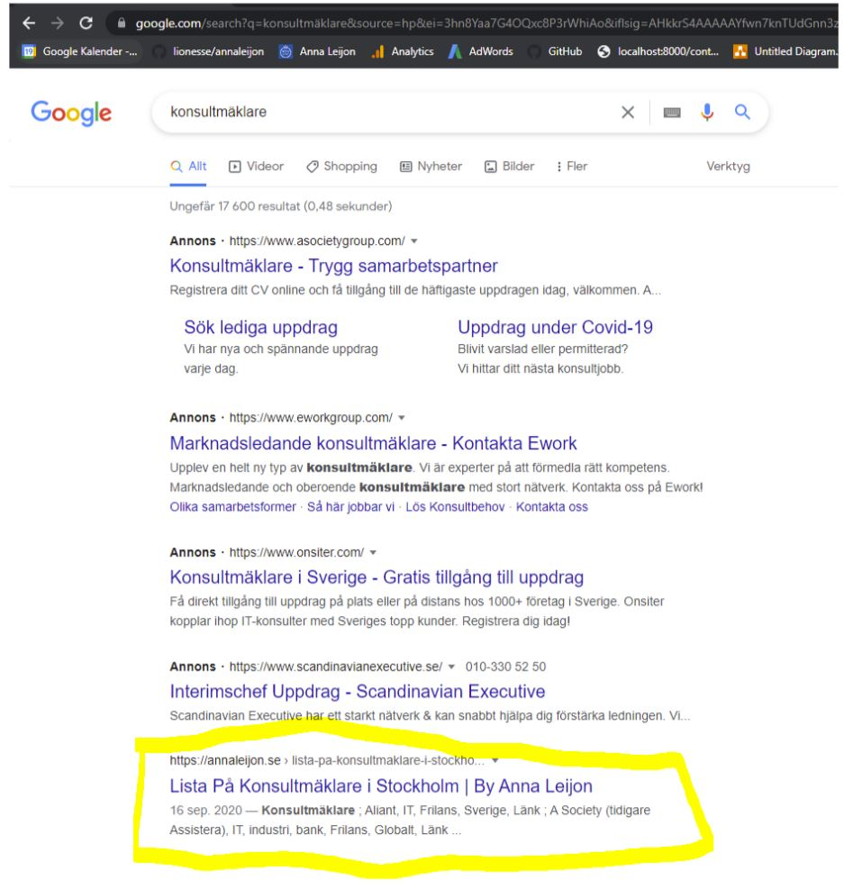
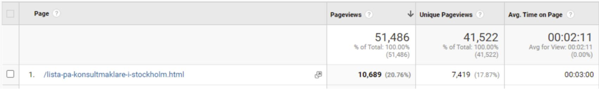
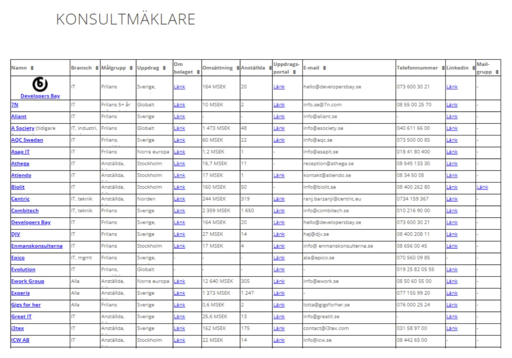

Vad jag erbjuder för samarbeten som “influencer”
Det är många som hör av sig och vill samarbeta med mig. Det är helt fantastiskt! Jag har alltid varit öppen med att jag vill kunna konvertera till att enbart hålla på med mina hobbies och kunna tjäna pengar på det. Just nu frilansar jag ju och är egenföretagare samt tar mig an uppdrag inom tech-produktutveckling (på andra företag än mina egna) som huvudsakliga inkomst och sysselsättning (det vill säga, jag säljer min tid för pengar from nine to five), men egentligen vill jag bara driva och bygga mina egna företag, produkter och brands samt tala, skriva och skapa podcasts. Jag tjänar dock inte riktigt tillräckligt mycket på mina hobbies (än!) för att kunna göra konverteringen fullt ut, men snart så. Det här är ett stort steg i den riktningen.
Hur som helst, jag har alltid eftersträvat att vara fullkomligt transparent. Jag upplever mig själv som ett mänskligt experiment tillägnat samhällsutvecklingen och jag skriver mer än gärna så kallade “meta-artiklar”. Det är artiklar om mina artiklar, så att säga, eller artiklar om mitt content-skapande. Det här är ett exempel på en sådan artikel. Med det sagt så rynkade jag på näsan åt de första som ville samarbeta med mig och som faktiskt började höra av sig för flera år sedan. Då visste jag inte vad jag skulle ta för pris, hur det skulle gå till och jag vill inte “sälja ut mig”, utan fortsatt kunna vara sann till mitt kall. Jag tyckte det kändes oseriöst. Jag kände mig dum när de frågade och jag inte visste vad jag skulle svara. Jag har alltid varit extremt passionerad av att skriva, men hade aldrig riktigt tänkt tanken på att tjäna pengar på min hemsida. Det kändes smutsigt.
Den här tanken har dock börjat mogna lite grann hos mig också i takt med att fler och fler hör av sig och vill samarbeta. Jag får be om ursäkt till de som jag i början “snäste av”, men nu har jag faktiskt tagit fram några riktigt bra produkter som jag känner att jag kan stå bakom. Jag hoppas också att mina läsare/lyssnare/tittare inte kommer lämna mig i och med att det kanske kommer börja dyka upp lite sponsrat innehåll, utan att de förstår och unnar mig det. Jag ger så himla mycket av mig själv till allmännyttan så jag hoppas att folk tycker att det är okej att jag tjänar lite pengar på det också.
Oavsett så har jag tagit fram tre olika exposure-produkter - för det är ju exposure som företagen vill ha som oftast kontaktar mig. De vill synas i mitt sammanhang och det handlar framförallt om att få exponera deras produkter eller tjänster till frilansare/inom frilansarmarknaden, utvecklare, startups/tech-bolag, generell B2B och specifikt till egenföretagare/småföretagare och så vidare. Jag väljer att inte att gå ut med exakta prisuppgifter. Dels för att det är dynamiskt och baserat på hur många som hör av sig och dels för att det faktiskt beror på VEM det är också. Ju mindre lämplig, desto dyrare och självklart får inte vilket casino- och bettingbolag som helst bara marknadsföra sig i mina kanaler hur som helst, utan det ska självklart vara relevant också. Jag förbehåller mig också alltid rätten att få skriva “meta-artiklar” om sponsringen. Det är nog många andra där ute som är nyfikna på hur sådant här fungerar så därför vill jag kunna skriva om det. Så här fungerar det:
Native-artikel
Ett helt sponsrat inlägg/artikel på min hemsida (native) fast där jag tydligt kommer skriva ut att det är betalat väljer jag att ta ganska mycket för (för att “prisa ut” det alternativet jämfört med de andra eftersom jag främst vill att min hemsida ska ha mitt "egna content" och det inte får vara för många sådana här artiklar). Så här fungerar det:
- Artikeln ligger kvar i 3 år
- Den publiceras under menyalternativet "writings"
- Kunden ger input, men jag skriver hela artikeln själv
- Det ingår en follow-länk dit de vill
- Det kostar X kr per artikel
Podcasten Techskaparna
De kan också sponsra min podcast Techskaparna. Det finns två alternativ:
- Ett helsponsrat/native-avsnitt: X kr
- Läsning:
- X kr för läsning i ett avsnitt
- X kr för läsning i fem avsnitt
Konsultmäklarlistan
Sedan har jag också hittat på begreppet “premium-plats” på min konsultmäklarlista. Det är någonting jag testar just nu med en konsultmäklare och som har fått väldigt fina resultat hittills. Jag har bara aktivt hört av mig till, och testat med, en hittills, men det kan totalt eventuellt komma att vara fem stycken konsultmäklare och tre stycken konsultmarknadsplatser som har "premium-positioner" samtidigt så det kommer inte kunna vara alla, tänker jag mig. Eftersom det här är en helt ny produkt (till skillnad från att sponsra podcasts och native-artiklar som ju är ganska självförklarande) så kommer här lite bakgrund också:
Om du googlar på "konsultmäklare" så kommer min lista upp först bland de organiska resultaten (efter alla annonser) och det är väldigt många som googlar på det här varje månad och går till min sida. Det är väldigt många som googlar på mitt namn och/eller kommer in på listan naturligt via min sida också.

Det senaste året 2021-2022 har jag haft 10 689 besökare på just konsultmäklarlistan varav de stannar i snitt 3 minuter på sidan, vilket är väldigt lång tid. De som, å andra sidan, köper Adwordet "Konsultmäklare" betalar 50 kronor per klick (källa: Mangools), vilka i print screenen ovan är A society, Eworkgroup med flera.

Det är väldigt många frilanskonsulter (blivande och etablerade) som vill ha tips på vilka konsultmäklare som jag kan rekommendera. Här erbjuder jag alltså konsultmäklare och konsultmarknadsplatser en chans att synas tydligare i min lista till en kostnad som är billigare än Adwords. Jag testar det här just nu med 3 månader i taget per samarbete. Jag erbjuder enbart de mäklare som jag känner att jag kan stå bakom (och som jag har verifierat) den här möjligheten och inte vilken cowboy-mäklare som helst.
För X kr* per månad i 3 månader får de:
- Sorteras högst upp
- Deras logga i listan som också är klickbar
- Dubbelt så hög rad
Se exempel med Developers Bay nedan eller gå in på min konsultmäklarlista och kolla själva. Med ProData Consult, som jag testar just nu, har de sett en trafikökningen på upp till 20x det de hade innan.

Jag har den största frilansarbloggen och den mest omfattande konsultmäklarlistan och här ger jag dem en möjlighet att synas extra tydligt på min hemsida om de vill. Observera att om det är flera som vill köpa extra exponering i listan så kommer de sorteras efter den som hör av sig först.
Självklart erbjuder jag dem möjligheten att ge mig en länk med UTM-taggar som jag kan implementera för att de ska kunna följa den ökade trafiken själva. Annars erbjuder jag också mig att skicka statistik till dem. Observera att UTM-taggarna inte fungerar på podcast-produkten, men de övriga två.
Ibland när de hör av sig om samarbeten vill de dock att jag ska tala, sitta i panel, vara konferencier/facilitator/moderator eller “subject matter expert”, hålla i events, gästblogga, vara med i podcasts, spela in videor och det gör jag jättegärna (jag gillar ju att synas). Om de inte tjänar pengar på det behöver inte jag heller göra det. Det vill säga, jag ställer gärna upp gratis om det är pro-bono och jag har tid. Om de tjänar pengar på det ska dock jag också göra det. Framförallt om de har sponsorer. Jag ställer jättegärna upp i era podcasts gratis, syns i olika sammanhang samt “lånar ut mitt namn” om det är en vettig setup/vettigt erbjudande. Det är bara att höra av er om ni är intresserade! Var dock sanna och tydliga med upplägget. Finns det ett kommersiellt intresse från er kan du räkna med att det gör det från mig också. Det är trots allt inte gratisarbete som jag håller på med. Jag skriver också alltid meta-artiklar om mina upplevelser och om min resa - både på gott och ont. Folk som har varit otrevliga, konstiga och så vidare har jag hängt ut (men anonymt) för att visa världen vad det är jag får utstå. Om de läser det själva utifrån någon annans perspektiv kanske de dessutom inser hur knäppt det blev. Med det sagt tycker jag att det här är superspännande och roligt! Och som med allting jag gör, om det inte går vägen så hänger jag inte läpp särskilt länge utan provar någonting annat istället - och du kan räkna med att jag kommer att skriva om det. Mina erfarenheter är dina erfarenheter.
Det är härligt att kunna konstatera att de här produkterna, som jag erbjuder i min "influencer-portfölj", och som jag har tagit fram, har uppstått till följd av en “pull-effekt” och inte en “push-effekt”. Det finns ju en viss tröskel också. Om det handlar om för lite pengar är det självklart inte värt det för min del. Det vill säga, de som har velat sponsra mig har fullkomligt behövt dra det här ur mig och det var först när efterfrågan började bli så stor som jag faktiskt tog tag i det. Det är mycket härligare än att först bygga en produkt och sedan försöka pracka på en tilltänkt publik den (för det är ju ungefär en tusen gånger vanligare approach - framförallt inom tech). Här kommer mina “kunder” (eller sponsorer) till mig istället för att jag behöver höra av mig till dem. Även om jag tycker att det är HELT SJUKT att någon vill betala för att få vara med på min lilla hemsida eller i min lilla podcast så kan jag ju krasst konstatera att efterfrågan finns där och det är väl upp till dem att avgöra om de tycker att det är värt det. Min reach växer också hela tiden och jag får väl ödmjukt konstatera att min hemsida inte är så liten längre. Jag har bara behövt figurera ut på vilket sätt samt till vilket pris jag är bekväm med att ta betalt och exponera dem på, vilket i och för sig inte har varit det lättaste. På det temat, om du har tips till mig på “features/produkter” som jag skulle kunna erbjuda eller content som jag skulle kunna produktifiera - säg jättegärna till! All hjälp jag kan få för att kunna göra min efterlängtade konvertering är varmt välkommen.
All feedback, input, råd, tips och hjälp är alltid välkommet. Maila gärna mig på: anna@annaleijon.com <3 Tack för att du har läst!
Med förhoppningen om att du kommer att fortsätta läsa <3
/Anna Leijon


NEWS LETTER
By subscribing, you will get notified when my next content is published before everyone else.
By subscribing, you will get notified when my next content is published before everyone else.